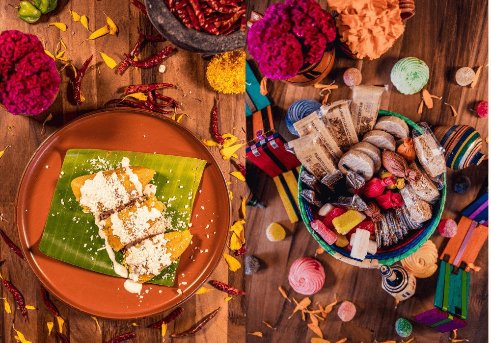
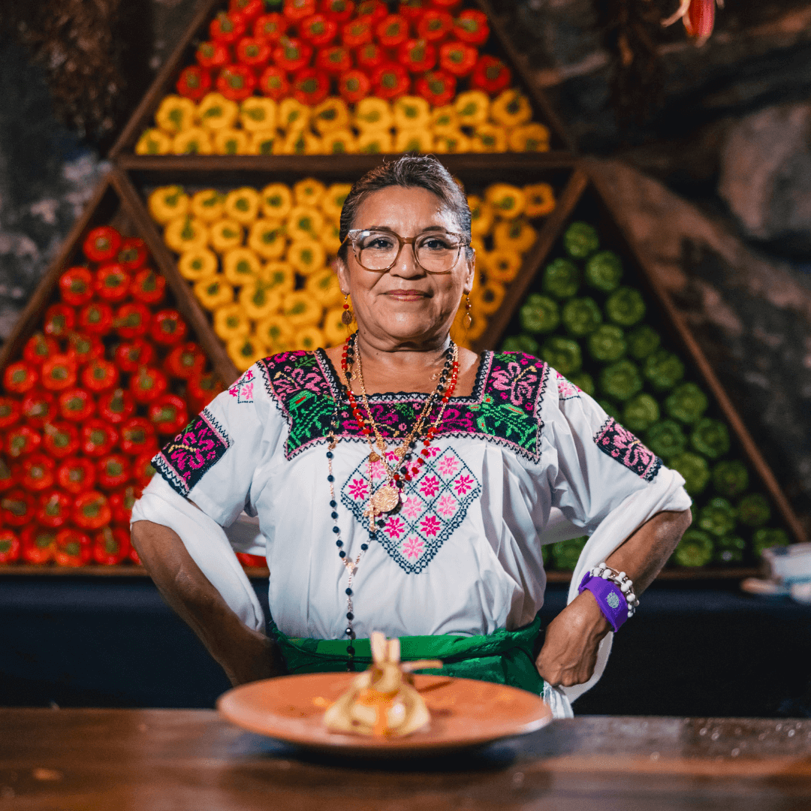
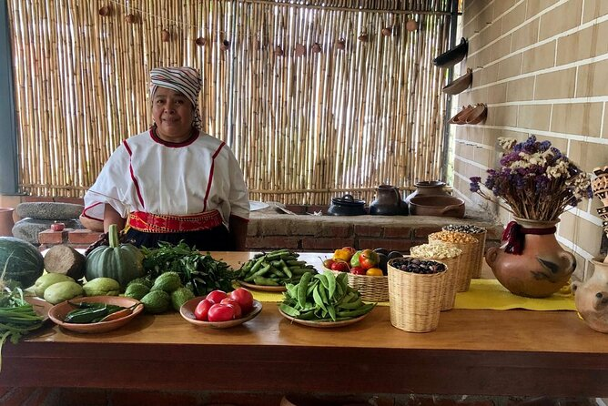
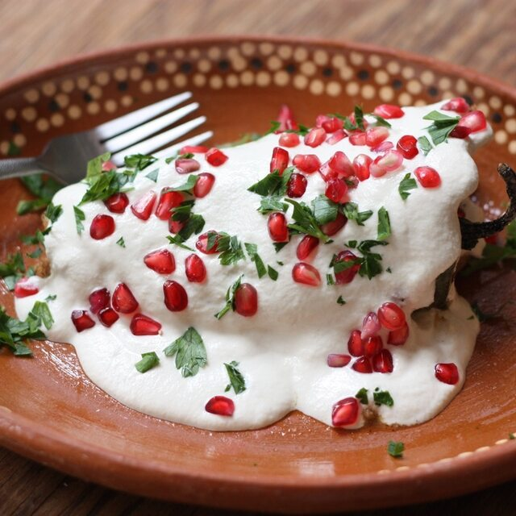

Sabor y Tradicion

Doña Clarita, nuestra fundadora

Limpieza, Tradicion y Amor

Ven y disfruta no solo una rica comida, una experiencia

En temporada, ven y disfruta de nuestros deliciosos chiles en Nogada

Precio especial para tu fiesta de fin de año